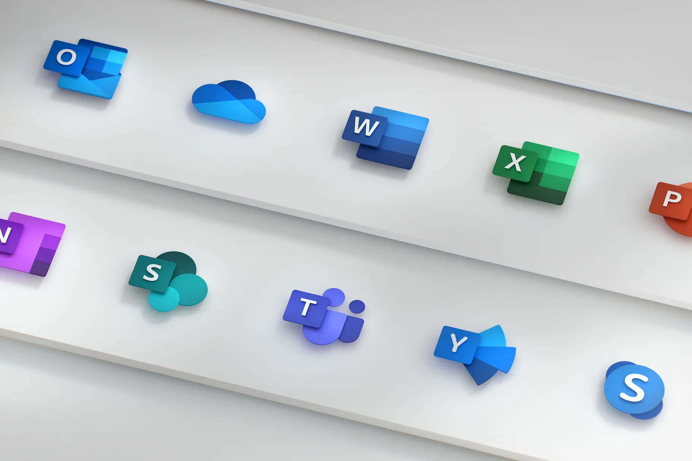

请访问原文链接：Microsoft Office LTSC 2021 for Mac 16.112 - 文档、电子表格、演示文稿和电子邮件 查看最新版。原创作品，转载请保留出处。
生活本不易，原创更不易。还请同行高抬贵手，尊重彼此的劳动成果。谢谢🙏
作者主页：sysin.org

2021.09.16，微软正式发布了 Office LTSC 2021，当然也包括 for Mac 版本，Office for Mac 2021 首个版本号为 16.53，与 Office 365 和 Office 2019 共享安装介质，通过许可的不同而区分版本和功能。请参看 Office 2021 for Mac 新增功能。
Office LTSC for Mac 2021 概述

适用于：Office for Mac、Office LTSC for Mac 2021、Office 2019 for Mac
以下 Office 适用于运行 macOS 的设备：
- Word
- Excel
- PowerPoint
- Outlook
- OneNote
- OneDrive
- Teams
以下部分旨在提供相关信息，以帮助你计划向 Office Mac 用户部署用户。
有关详细信息，请参阅 适用于管理员的部署选项 Office for Mac。
系统要求
Office for Mac macOS 的三个最新版本上支持该版本。当 macOS 的新主要版本已发布后，Microsoft 将删除对最早版本的支持，并支持最新和以前的两个版本的 macOS。有关详细信息 (sysin)，请参阅升级 macOS 以继续接收 Microsoft 365 Office for Mac 更新。
有关所有系统要求，请参阅 Microsoft 365和 Office 的系统要求。
芯片集支持
Office 为 Apple silicon 和基于 Intel 的 Mac 设备提供本机支持。有关详细信息，请参阅 Apple silicon Microsoft 365 2019 Office 和 2019 年支持。
备注
OneDrive Microsoft Teams 对 Apple silicon 没有本机支持。
语言
所有 受支持的语言Office for Mac 包含在安装程序包的 (.pkg) 文件中。每种语言没有单独的安装程序包文件。这意味着管理员无法选择要部署到用户的语言。而是在安装过程中根据 “系统首选项” 设置选择语言。如果未支持任何语言设置，Office Office 英语安装。安装所有语言，这意味着 用户可以轻松地切换到 其他语言，而无需重新安装 Office。
更新
Office for Mac 大约每月更新一次。这些更新根据需要包括安全更新和非安全更新，例如为更新提供稳定性或性能改进的更新 Office。对于具有计划或 Microsoft 365 (Office 365) 的用户，这些更新还可以包括新增功能或改进功能。有关详细信息，请参阅 部署适用于 Office for Mac 的更新。
功能
有关不同版本应用程序的功能 Office for Mac，请查看以下资源。请记住，Office Mac 2021 和 Office 2019 for Mac 的 LTSC 在发布后不会收到新功能。如果要获取新的 Office 功能，应考虑迁移到包含 Microsoft 365 (的 Office 365) 计划 Office。
如果要查找可帮助用户开始使用 Office for Mac 的信息，请查看 Office 帮助 培训 & 资源。
Office for Mac 功能
若要查看每个每月版本中的最新功能，请参阅 Microsoft 365中的新增 功能或 Office for Mac。
提示
若要提前访问新功能，请加入 Office 预览体验计划。
Office LTSC for Mac 2021 功能
有关适用于 Mac 2021 Office LTSC 中的新功能的信息，请参阅以下文章：
- Excel 2021 for Mac 中的新增功能
- Outlook 2021 for Mac 新增功能
- PowerPoint 2021 for Mac 新增功能
- Word 2021 for Mac 中的新增功能
Office 2019 for Mac 功能
有关 2019 for Mac Office 中的新功能的信息，请参阅以下文章：
- Excel 2019 for Mac 新增功能
- Outlook 2019 for Mac 新增功能
- PowerPoint 2019 for Mac 新增功能
- Word 2019 for Mac 中的新增功能
隐私控制
可以使用首选项设置来配置与诊断数据和连接体验相关的设置，Office Mac 上的连接体验。有关详细信息，请参阅 使用首选项管理 Office for Mac 的隐私控制。
应用捆绑包
每个应用的应用捆绑包（如 Word）包括运行应用所需的全部资源。应用之间没有任何共享资源。例如，适用于 Excel for Mac 和 Word for Mac 的应用捆绑包都包含应用所需的字体资源。
自定义项
为了帮助提高安全性，Office for Mac Apple 应用沙盒指南。这意味着在部署应用包之前或之后无法自定义 Office。请勿在应用捆绑包中添加、更改或删除文件。例如，即使无需 Excel 的法语语言资源文件，也不要删除它们。此更改可阻止 Excel 启动。但是，你仍然可以 为每个应用 配置首选项。
应用图标
在 Mac Office 应用时，应用图标不会自动添加到 Dock，但可从 Launchpad 获得。你可以为用户提供有关如何向扩展坞 添加应用图标的说明。
版本号
Office for Mac、Office MAC 2021 和 Office 2019 for Mac 的主要版本是 16.x。由于主要版本相同 (sysin)，因此适用于 Mac 的三个版本的应用程序设置，包括策略、首选项和首选项与 Office 相似。
此外，与旧版本兼容的加载项和其他扩展解决方案很可能与较新版本兼容，或者需要最少的测试。例如，从 2019 for Mac Office 升级到 Office LTSC for Mac 2021 时。
Office LTSC for Mac 2021 的版本号为 16.53 或更高版本。Office 2019 for Mac 的版本号为 16.17 或更高版本。
下载地址
Office for Mac 2021 (Office 365) pkg
⚠️：请慎用此版本，需要 root 权限才能运行，安装一堆无用文件，强制自动更新。
此版本的唯一优点是开放下载，各大网站通常提供的也是此版本。
Microsoft Office for Mac 2021 (Office 365) 16.112 Universal（2026-08-12）
- 百度网盘链接：https://pan.baidu.com/s/1xCXqrMOZp_5fFJ4WFykADA?pwd=k6rm
- 系统要求：从 16.101 开始，要求 macOS Sonoma 14.0 及以上版本。
从 16.53 开始，Office 2021 和 Office 2019 是共用安装文件，通过许可证激活不同的版本，主要体现在界面风格上有较为明显差异，另外 2021 版有一些新增功能。
Office 365 是一种订阅模式，永久许可版即 Office LTSC for Mac。
Office LTSC 2021 for Mac DMG VL
该产品符合 Apple 平台设计规范，无需 root 权限安装，只需要拖拽到应用程序下即可，无需登录，没有自动更新程序，也不会提示过期。
- 无需 root 权限，拖拽即可安装
- 无需登录账号（无需注册，支持离线使用）
- 无自动更新程序
- 不会提示过期
- 可以仅安装单个组件
包含 Excel、Outlook、PowerPoint 和 Word 四个核心组件，可独立运行单个组件。

Microsoft Excel：电子表格和数据分析

Microsoft Outlook：电子邮件和日历

Microsoft PowerPoint：创建吸引人的演示文稿

Microsoft Word：创建、编辑和分享文档
备注：OneNote 免费，需要登录。
Microsoft Office LTSC for Mac 2021 DMG VL v16.54 (Final version) for macOS Mojave 10.14
Microsoft Office LTSC for Mac 2021 DMG VL v16.66 (Final version) for macOS Catalina 10.15
Microsoft Office LTSC for Mac 2021 DMG VL v16.77 (Final version) for macOS Big Sur 11
Microsoft Office LTSC for Mac 2021 DMG VL v16.89 (Final version) for macOS Montery 12
Microsoft Office LTSC for Mac 2021 DMG VL v16.100 (Final version) for macOS Ventura 13
Microsoft Office LTSC for Mac 2021 DMG VL v16.112 for macOS Sonoma 14 or later
- 支持 macOS Sonoma 14、macOS Sequoia 15 和 macOS Tahoe 26
- 百度网盘链接：https://pan.baidu.com/s/1UtMOmY0DTRDN-GpV3w-9zg?pwd= <专享>
- 2026-08-12，将/已上传到上个版本相同目录。
相关产品：
新版链接：

文章用于推荐和分享优秀的软件产品及其相关技术，所有软件提供免费版或试用版。内容若侵犯了您的版权，请联系作者删除。如果您喜欢这篇文章，或者觉得它对您有所帮助，亦或发现有不当之处；欢迎发表评论，也欢迎分享这个网站，或者赞赏一下，谢谢！提示：捐赠或赞赏属于自愿赠予行为，提交后即表示您对作者的支持与认可。为避免误操作，请在确认前仔细检查金额，支付完成后将无法撤销或退还。
 支付宝赞赏
支付宝赞赏  微信赞赏
微信赞赏赞赏一下
敬请注册！点击 “登录” - “用户注册”（已知不支持 21.cn/189.cn 邮箱）。 请勿使用联合登录（已关闭）。